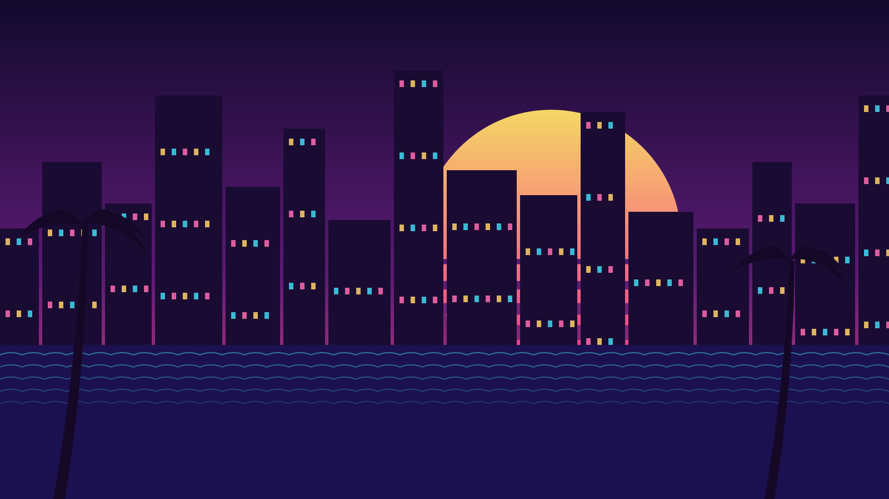

Guia de fã não oficial de GTA VI
Seu guia para explorar Leonida
Veículos, personagens, regiões, dicas para iniciantes e um checklist para acompanhar seu progresso em Grand Theft Auto VI. Tudo com fontes, e sem inventar o que ainda não foi confirmado.
Contagem para o lançamento
19 de novembro de 2026 · PS5 e Xbox Series X|S
Lançamento em 19 de novembro de 2026.
PC e GTA Online: a confirmar. Fonte: site oficial de GTA VI (abre em nova aba).
Galeria
Um passeio por Leonida
Use os botões abaixo das imagens ou as setas do teclado. A troca automática pode ser pausada a qualquer momento.
Comece por aqui
Primeira vez no Guia Leonida?
O que é Leonida
É o estado fictício de GTA VI, inspirado na Flórida. Tem seis regiões principais, de Vice City aos pântanos de Grassrivers e às montanhas do Mount Kalaga.
Ver as seis regiõesDicas para iniciantes
- Ajuste legendas e acessibilidade antes de jogar.
- Siga a história: ela ensina os controles.
- Explore uma região de cada vez.
Feito para todo mundo
Mude o tema, aumente a fonte, ative o alto contraste ou a fonte para dislexia no botão Acessibilidade, no topo de qualquer página.
Conhecer os recursos
Catálogo
Ver o catálogo completo
Destaques do guia
Carregando destaques…
Novidades
Linha do tempo de GTA VI
Os marcos oficiais, do primeiro trailer ao lançamento. Itens novos desde sua última visita ganham um selo.